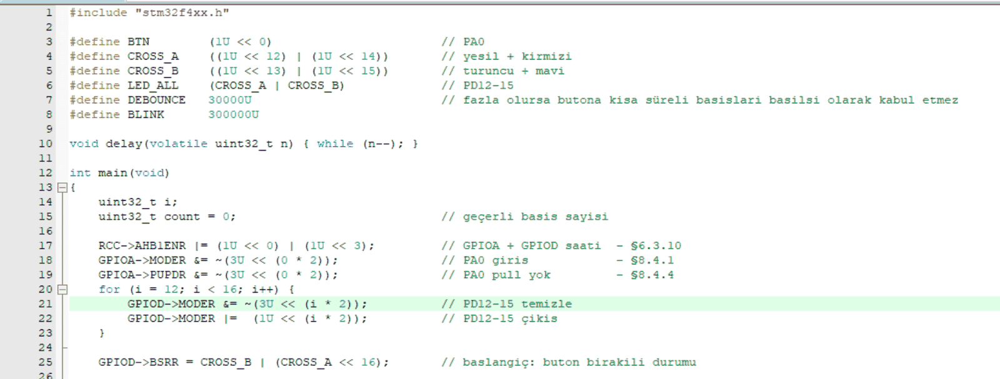
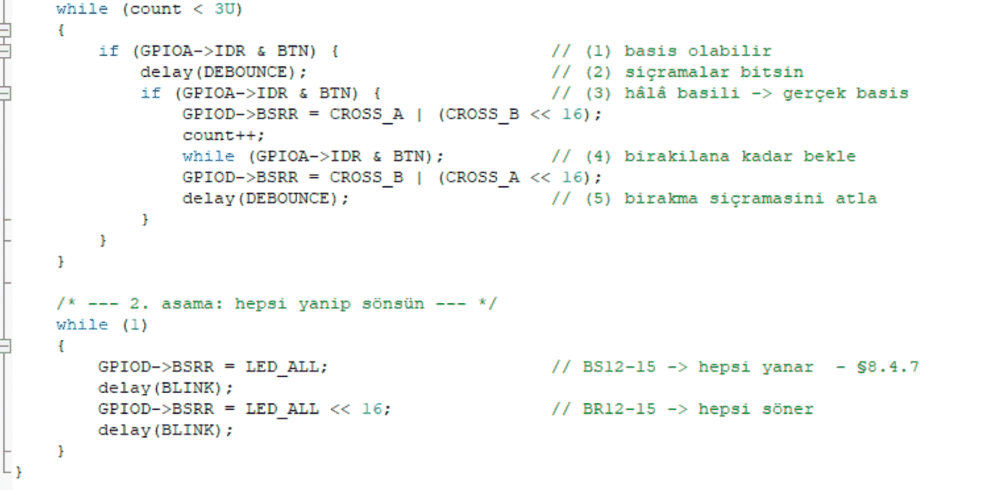

Reading a Button and Debouncing on the STM32F407: My First Register-Level Step
Contents
I recently joined the AGÜ rocket team. A rocket's flight computer reads sensors, tracks altitude, detects apogee to trigger recovery and sends telemetry to the ground. STM32 is one of the most common microcontrollers on these boards. So I decided to learn STM32 from the ground up, really understanding it, and I am documenting it here part by part.
Instead of ready-made functions like Arduino's digitalRead(), I am starting at the register level: looking up what each bit does in the reference manual (RM0090) and writing it myself. The board is an STM32F407G-DISC1 and the IDE is Keil µVision. First exercise: read the on-board button and drive the LEDs.
The task
At the start the orange and blue LEDs are on. Each press turns on green and red, and releasing brings orange and blue back. After 3 valid presses the program moves to stage two and all four LEDs blink together. Sounds simple, but the real lesson is hidden in the words “valid press”.
Hardware: the on-board button and LEDs
The blue USER button (B1) is wired to PA0 and is active-high: pressed reads 1, released reads 0. The board already has an external pull-down resistor, so I left PA0's internal pull-ups/pull-downs off. The four LEDs sit on PD12–PD15, arranged in a cross in the middle of the board. I named the opposite green–red pair CROSS_A and the orange–blue pair CROSS_B.
Step 1: Turn on the clocks (RCC)
To save power, peripheral clocks on an STM32 are off by default; you must enable a GPIO port's clock before writing to it. GPIOA and GPIOD are on the AHB1 bus. In RCC_AHB1ENR, bit 0 enables GPIOA and bit 3 enables GPIOD.
RCC->AHB1ENR |= (1U << 0) | (1U << 3); // GPIOA + GPIOD saatiStep 2: Set the pin modes (MODER, PUPDR)
In MODER each pin gets 2 bits. I first clear both bits with &= ~(3U << (i*2)), then write “01” with |= (1U << (i*2)); writing without clearing could mix with the previous value. PA0 stays at “00” (input).
00 input · 01 output · 10 alternate function · 11 analog
Step 3: Drive the LEDs with BSRR
I switch the LEDs with BSRR (bit set/reset) instead of ODR. The lower 16 bits set a pin to 1 and the upper 16 bits reset it to 0; bits written as 0 change nothing. So a single write can turn some LEDs on and others off without a read-modify-write, and the operation is atomic.
GPIOD->BSRR = CROSS_B | (CROSS_A << 16); turns orange and blue on (BS13, BS15) and green and red off (BR12, BR14) in a single write. Bits written as 0 leave their pins alone.The problem: one press, many counts (bouncing)
On my first try I saw a single press being detected as several. At first I thought it was arcing between the button contacts; the real cause is mechanical: when you press the button, the metal contacts hit each other and bounce, opening and closing a few times for a very short time before they settle. This is called contact bounce and on most buttons it lasts a few milliseconds.
A few milliseconds is nothing to a human, but a processor running at 16 MHz can read the pin thousands of times in that window. To the code, every bounce is a separate press: a 3-press target can be reached in a single press.
The fix: read, wait, read again
I implemented a software debounce: when the pin reads 1, don't count it yet; wait for the bouncing to settle and read again. If it is still 1, it is a real press. Then I wait for the release and skip the bounce on release as well; otherwise the release bounce can look like a new press.
- 1
IDR & BTNIs the pin 1? It might be a press.
- 2
delay(DEBOUNCE)Wait for the bouncing to end.
- 3
IDR & BTNStill 1? → Real press: swap LEDs, count++
- 4
while (IDR & BTN);Wait until the button is released.
- 5
delay(DEBOUNCE)Skip the bounce on release too.
while (count < 3U) {
if (GPIOA->IDR & BTN) { // (1) basis olabilir
delay(DEBOUNCE); // (2) sicramalar bitsin
if (GPIOA->IDR & BTN) { // (3) hala basili -> gercek basis
GPIOD->BSRR = CROSS_A | (CROSS_B << 16);
count++;
while (GPIOA->IDR & BTN); // (4) birakilana kadar bekle
GPIOD->BSRR = CROSS_B | (CROSS_A << 16);
delay(DEBOUNCE); // (5) birakma sicramasini atla
}
}
}Simulation: with debounce off, the contact “bounces” 2–4 times per press.
Why a delay, and its limits
For the wait I used a simple counting loop for now: void delay(volatile uint32_t n) { while (n--); }. volatile stops the compiler from optimising this “do-nothing” loop away. I tuned DEBOUNCE by trial: too small and the pin is read again before the bouncing ends; too large and short, quick presses are missed.
This approach has two weak points: the delay depends on the CPU frequency and compiler settings, so it is not an exact number of milliseconds; and the CPU can do nothing else while waiting. On a rocket flight computer, locking up the CPU to wait for a button while sensors need reading is not acceptable. So in the coming parts I will learn real millisecond timing with SysTick and reading the button with an EXTI interrupt.


Full code
#include "stm32f4xx.h"
#define BTN (1U << 0) // PA0
#define CROSS_A ((1U << 12) | (1U << 14)) // yesil + kirmizi
#define CROSS_B ((1U << 13) | (1U << 15)) // turuncu + mavi
#define LED_ALL (CROSS_A | CROSS_B) // PD12-15
#define DEBOUNCE 30000U // fazla olursa kisa basislari kacirir
#define BLINK 300000U
void delay(volatile uint32_t n) { while (n--); }
int main(void)
{
uint32_t i;
uint32_t count = 0; // gecerli basis sayisi
RCC->AHB1ENR |= (1U << 0) | (1U << 3); // GPIOA + GPIOD saati
GPIOA->MODER &= ~(3U << (0 * 2)); // PA0 giris
GPIOA->PUPDR &= ~(3U << (0 * 2)); // PA0 pull yok (kartta pull-down var)
for (i = 12; i < 16; i++) {
GPIOD->MODER &= ~(3U << (i * 2)); // PD12-15 temizle
GPIOD->MODER |= (1U << (i * 2)); // PD12-15 cikis
}
GPIOD->BSRR = CROSS_B | (CROSS_A << 16); // baslangic: buton birakili durumu
while (count < 3U)
{
if (GPIOA->IDR & BTN) { // (1) basis olabilir
delay(DEBOUNCE); // (2) sicramalar bitsin
if (GPIOA->IDR & BTN) { // (3) hala basili -> gercek basis
GPIOD->BSRR = CROSS_A | (CROSS_B << 16);
count++;
while (GPIOA->IDR & BTN); // (4) birakilana kadar bekle
GPIOD->BSRR = CROSS_B | (CROSS_A << 16);
delay(DEBOUNCE); // (5) birakma sicramasini atla
}
}
}
/* --- 2. asama: hepsi yanip sonsun --- */
while (1)
{
GPIOD->BSRR = LED_ALL; // BS12-15 -> hepsi yanar
delay(BLINK);
GPIOD->BSRR = LED_ALL << 16; // BR12-15 -> hepsi soner
delay(BLINK);
}
}Technical details
- Board: STM32F407G-DISC1 (STM32F407VG, Cortex-M4)
- IDE: Keil µVision · Language: C, register level (CMSIS header
stm32f4xx.h) - Registers used:
RCC_AHB1ENR,GPIOx_MODER,GPIOx_PUPDR,GPIOx_IDR,GPIOx_BSRR - Pins: PA0 (USER button, active-high), PD12–PD15 (LED)
What I took away from this part
- A peripheral's clock must be enabled before using it.
- Multi-bit fields like MODER need to be cleared before writing.
- BSRR changes pins safely in a single write.
- Mechanical buttons never give a “clean” signal; you always need debounce.